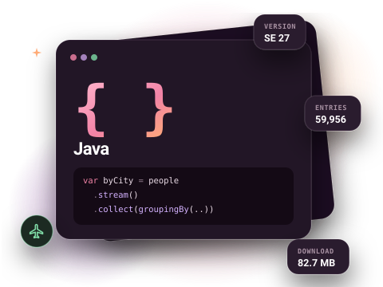
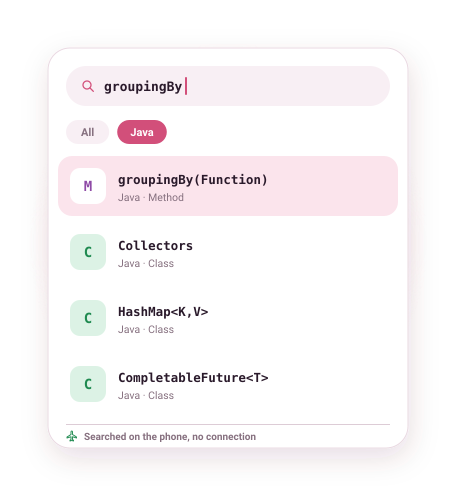

Java API documentation, offline on Android
The Java SE API reference, every package, class, method and field, on your phone and searchable without internet. About 83 MB to download, then it never needs a connection again.

What is in the Java docset
This is the Java SE API reference: the same Javadoc you would browse online, packaged as a docset. Methods are listed with their parameter types, so overloads such as groupingBy(Function) and groupingBy(Function, Collector) are separate results you can tell apart before opening them.
With almost 60,000 entries, Java is one of the larger docsets, and this is where a local index pays off: results come from the copy on your phone, not from a server.
- Version
- SE 27
- Entries
- 59,956
- Download
- 82.7 MB
- Source
- Official docset feed

Example entries you can search offline
A few real entries from the Java docset's index, as they appear in search results:
| Entry | Type |
|---|---|
| HashMap<K,V> | Class |
| CompletableFuture<T> | Class |
| Optional<T> | Class |
| Collectors | Class |
| groupingBy(Function) | Method |
| ofVirtual() | Method |
| LocalDate | Class |
| HttpClient | Class |
| Files | Class |
| java.util.stream | Package |
How to get the Java documentation offline
- Install DevDocs from Google Play. It is free and needs no account.
- Open the Store tab and search for Java.
- Tap Download. The docset downloads in the background (82.7 MB compressed) and is indexed on your phone.
- Open Search or the docset in your Library. From now on it works with no connection.
Tips for searching the Java docs
- Search a method name followed by
(to see every overload, for examplegroupingBy(. - Search a package name such as
java.util.concurrentto open its package summary. - Install Kotlin and Android (Kotlin) alongside Java if you work on Android; search covers every installed docset at once.
Related docsets
Also in the DevDocs Store: Spring Framework, Groovy JDK, Gradle Java API, OpenCV Java, Play Java. Install any of them and one search covers them all. See also: Kotlin documentation offline and Android documentation offline.
Java docs offline: questions
Which Java version is it?
Can I download Java documentation for offline use on a phone?
Does it include Spring or other libraries?
More answers in the DevDocs FAQ.
Other documentation you can keep offline
- Python 16,146 entries
- Kotlin 12,301 entries
- JavaScript 9,447 entries
- Android (Kotlin) 200,572 entries
- React 1,369 entries
- Django 5,705 entries
Or browse all 806 docsets by category.
Get the Java docs on your phone
DevDocs is free, has no ads and needs no account.